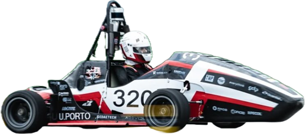

Where I've
worked.
Associate Software Engineer Intern
Built a Slack bot service that helps the team diagnose production errors faster. Alerts from Alertmanager are filtered, grouped and posted to Slack with one-click actions to diagnose, propose a fix, or open a Jira ticket. Each action pulls the relevant logs and hands them to a worker agent running in Kubernetes, which answers right in the thread.
Curricular Internship, Observability
Designed and built the observability and alerting system for LTPlabs' AIR platform. Grafana alert rules feed a webhook that routes notifications to Microsoft Teams as adaptive cards, with monitoring on the alert channels themselves so a silent failure doesn't stay silent. Dashboards make system health readable at a glance.

Electronics & Software Team Member
Part of the Electronics & Software subdepartment of FEUP's Formula Student team, where everything you write ends up on a real race car. Built real-time sensor dashboards to monitor the car's systems during runs, worked on sensor integration, and wrote code for the microcontrollers that keep the car running.
Where I
studied.
MSc Computer Engineering
Master's at the Alameda campus, focused on cloud, DevOps and distributed systems.
BSc Computer Engineering
The switch to tech, with a focus on systems and infrastructure.
BSc Hotel Management
Where I learned to work with people, manage complexity and care about the details others miss.
Other
things.
Let's talk.
Open to conversations about cloud, DevOps and distributed systems. The best way to reach me is LinkedIn.